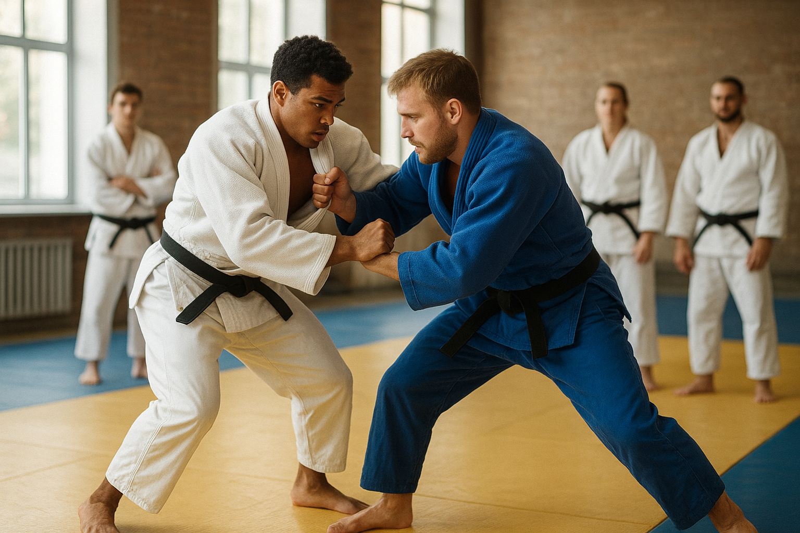

Willkommen auf unserer Website über Judo! Judo ist eine faszinierende Sportart, die körperliche Fitness, geistige Stärke und soziale Fähigkeiten miteinander verbindet. Wer Judo trainiert, lernt nicht nur, seinen Körper zu bewegen, sondern entwickelt auch Disziplin, Ausdauer und Selbstbewusstsein.
Judo ist ein Sport, der Menschen jeden Alters anspricht – von kleinen Kindern bis zu Erwachsenen. Dabei geht es nicht darum, wer am stärksten ist, sondern wer klug, geschickt und konzentriert kämpft. Jeder, der Judo übt, lernt seinen Körper besser kennen: Wie man sich bewegt, das Gleichgewicht hält und die eigene Kraft richtig einsetzt.

Ein wichtiger Teil des Judos ist, dass man Respekt vor dem Partner und Fairness lernt. Man trainiert nicht gegen Freunde, sondern mit ihnen. Beim Üben unterstützen sich die Sportler gegenseitig, helfen einander bei den Techniken und motivieren sich. Dadurch entsteht ein starkes Gemeinschaftsgefühl, und viele Judoka nennen ihre Trainingspartner sogar Freunde fürs Leben.
Judo ist auch ein mentales Training. Wer regelmäßig übt, lernt, ruhig zu bleiben, sich zu konzentrieren und Probleme Schritt für Schritt zu lösen. Man übt nicht nur körperliche Techniken, sondern auch Geduld, Aufmerksamkeit und Selbstkontrolle. Diese Fähigkeiten helfen nicht nur beim Sport, sondern auch in der Schule, zu Hause oder im Alltag.
Ein weiterer Grund, warum Judo so besonders ist, ist, dass man immer etwas Neues lernen kann. Egal, wie lange man schon trainiert – es gibt immer neue Techniken, Übungen oder Herausforderungen. Man kann Fortschritte sehen, wenn man regelmäßig übt, und das motiviert viele, dranzubleiben.
Wer Judo ausprobiert, merkt schnell: Es macht Spaß, es ist herausfordernd und man kann seine eigenen Grenzen entdecken und erweitern. Außerdem fördert Judo die Fitness, trainiert Ausdauer, Beweglichkeit, Kraft und Koordination. Wer regelmäßig trainiert, fühlt sich stärker, gesünder und selbstbewusster.
Judo ist also weit mehr als nur ein Sport – es ist eine Möglichkeit, Körper und Geist gleichzeitig zu trainieren, Freundschaften zu schließen und wichtige Werte wie Respekt, Fairness und Teamgeist zu lernen. Auf dieser Website bekommst du einen ersten Einblick in die Welt des Judos und kannst entdecken, warum diese Sportart seit über 100 Jahren Menschen auf der ganzen Welt begeistert.
Wir laden dich ein, die Website zu erkunden, mehr über Judo zu erfahren und vielleicht sogar selbst einmal eine Judostunde auszuprobieren. Judo kann dein Leben in vielerlei Hinsicht bereichern – durch Bewegung, Spaß und die Möglichkeit, sich selbst immer wieder neu herauszufordern.